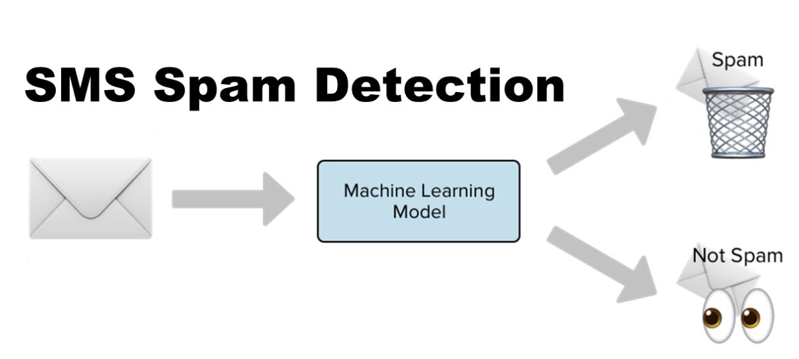

Hello! My name is Jason Paul Miller, and I am a current senior at New Mexico State University pursuing a BS in Electrical Engineering - Digital Signal Processing and Computer Science.
When I'm not coding, I enjoy hiking, painting, and exploring new places. I am always eager to learn new technologies and take on challenging projects.

Developed an SMS spam detection system employing word embeddings and a Naive Bayes classifier that achieved a 99% accuracy rate. Created a separate classifier using word embeddings along with Word2Vec and a binary classifier which reached 91% accuracy rate.
Successfully engineered a functional C compiler, which demonstrated my competence in developing lexical analyzers and parsers to generate functional executables and error descriptions.

I architected an iOS Health Information application utilizing the Swift and Firebase. The app has the capability to monitor and track a user's health-related information, including appointments, medication refills, day-to-day pharmaceutical consumption, and fulfillment of suggested dosages.